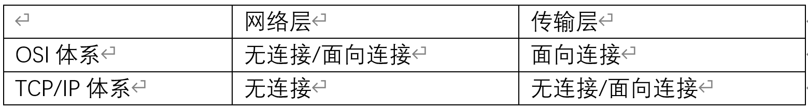
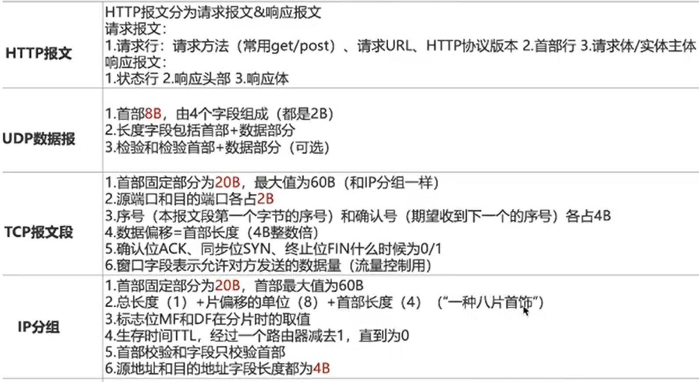
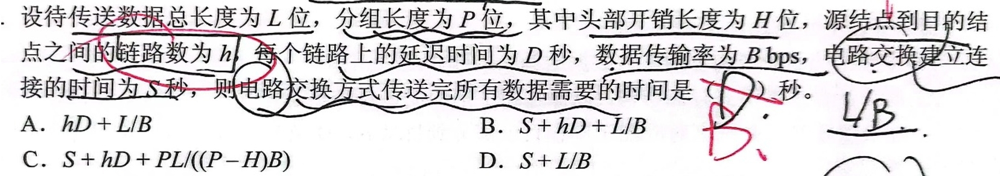
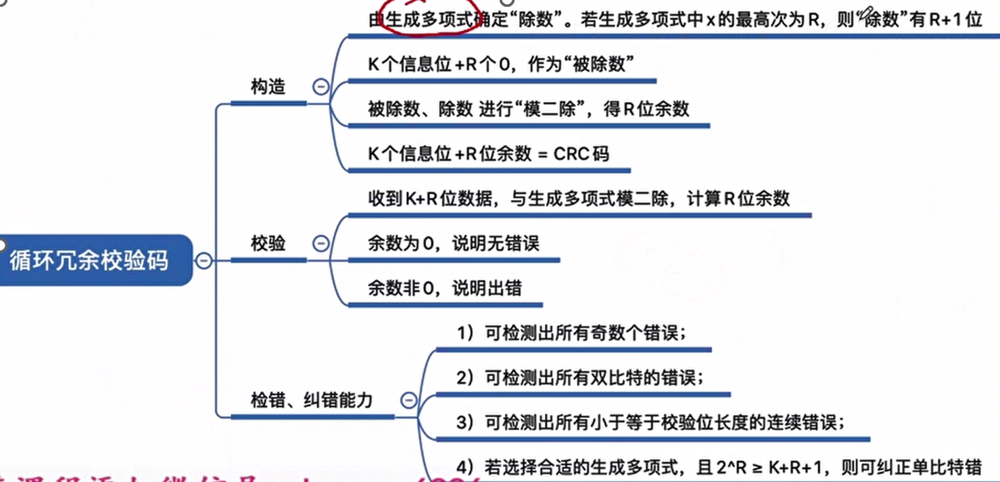
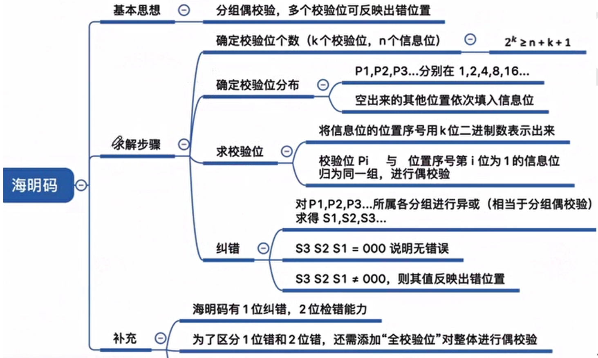
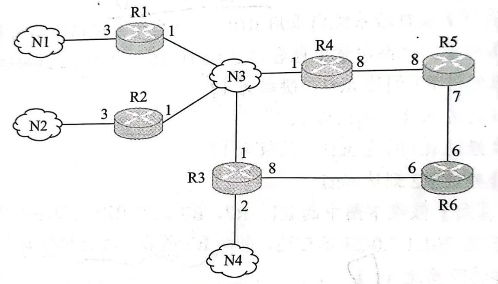

计算机科学基础细节知识总结——计算机网络
作者： 禾旺
目录：- 第一章：概述
- 第二章：物理层
- 第三章：链路层
- 第四章：网络层
- 第五章：传输层
- 第六章：应用层
第一章：概述
- 计算机网络的资源是指：计算机硬件（路由器、主机）、软件（操作系统、数据库）和数据（web等）
- 分组交换网络的缺点：附加信息开销大
- 协议中的要素：语法（数据与控制信息之间的结构或格式，或传输数据的格式），语义（需要发出何种控制信息、完成何种动作以及做出何种响应，或要完成的功能）、同步（规定各种操作的条件、时序关系）
- 接口是同一节点内相邻两层之间交换信息的连接点，协议是控制对等实体间进行通信的规则集合
- 物理媒体是物理层下面的层，OSI模型中的会话层可以在文件中插入同步点，避免网络故障重传 
- 网络体系结构是抽象的，不包括各层协议及功能的具体细节，它的分层保证了网络的灵活性和封装性；分层的原则时把网络的功能划分，而不是把相关的功能组合 
第二章：物理层
- 奈氏准则给出了码元传输速率的限制，但没有对信息传输速率给出限制，有噪音的条件则奈氏准则和香农定理都要计算并取最小值（奈氏准则没有噪音条件，有系数2）
- 频率范围的跨度就是带宽，采样频率是带宽的两倍
- 曼彻斯特编码的时钟同步是位于信号中间的边界
- 信号有基带信号（将数字信号1、0直接用两种不同的电压表示，然后放到数字信道上传输）和宽带信号（将基带信号进行调制后形成频分复用模拟信号，然后放到模拟信道上传输）之分，其区别在于是否对数据进行调制（波形表示）、
- 以太网使用两个比特表示一个码元
- 报文交换不能用于实时通信环境，因为数据单位是报文，存储转发的时间比较大、不固定
- 虚电路有临时性和非临时性两种
- 本题需要注意的是：题目考察的内容是电路交换，那么已经给出了“分组长度”等干扰信息，但是不会给太多干扰信息，即使不确定“链路上的延迟”是什么，也应当把它当作非干扰信息，使这个题目的答案看上去合理。 
- 543规则：中继器或集线器互联的网络中，任意发送方和接收方最多只能经过4个设备、5个网段，3个主机段
- 放大器用于远距离模拟信号传输，会同时放大信号和噪声，引起失真
中继器将信号再生（不是简单的放大）。 - 两个网段在物理层互联时要求数据传输速率相同，但链路层协议可以不同（者可以推广到别的层）
- 集线器从一个端口收到数据后，从其他所有端口转发出去，而以太网一个主机发送数据后，该以太网内的所有主机（包括自己）都会受到该数据
第三章：链路层
- 链路层不需要考虑物理层的实现细节
- CSMA协议中：
1坚持：可能发生冲突
非坚持：会导致网络空闲
P坚持：比较综合 - 链路层协议一般都认为是CSMA/CD
- 链路层流量控制有：停止-等待协议（最基础的一个）和滑动窗口协议（强调滑动窗口，包括GBN和SR），这三个都是连续ARQ（自动重传请求，强调自动重传）协议
- 滑动窗口协议中：窗口大小=发送窗口+接收窗口；分为两种：
GBN（后退N帧）：n = n-1 + 1;
SR（选择重传）： n = n/2 + n/2 - 注意GBN中的用词：“接收窗口内的序号为4“表示接收方此时期待的是4号帧，别的帧一律不收。GBN中也不存在缓存，故关于”将5号帧缓存下来“的说法都是错的
- TDM（时分复用）可以用于数字传输，而FDM（频分复用）不行
- 链路层在不可靠的物理介质上提供可靠传输，作用有：物理寻址、将数据封装成（定义了数据结构）、流量控制、差错校验，没有拥塞控制功能
- 两个码字间的距离：合法码字逐位对比，不同的位的个数
码距：一种编码方案中所有码字之间的最小距离
奇偶校验：加入一位校验位之后，码字中所有1的个数为奇数（或偶数）
循环冗余校验：位数不等式和海明码相同，计算方法要会：其校验码为模二除出的余数（除数时R+1位，在信息位后增加R个0，这是为了得到R位余数后加上去位数刚好）

- 海明码校验位数k需要满足2^k>=n+k+1，其含义是：k个校验位能表示的错误位数 大于等于 总位数加一个正确情况。 
- 循环冗余校验和海明码校验的信息位效率是差不多的，但是CRC没有位置信息所以不能寻位纠错，而计网因为使用自动重传请求，所以不太需要纠错。
- 广播mac地址：ff-ff-ff-ff-ff-ff
- 同一局域网中有两个设备有相同的MAC地址时，它们都不能正常通信
- 以太网mac地址最高位为1时表示组播地址，这需要分组管理的支持
- 从组播IP地址到组播mac地址的方法： 把IP地址从后往前数的第24位改为0，然后把低24位直接映射为MAC地址，前面再加上MAC组播的地址（已知）得到结果
- 802.11是无线局域网标准，802.3是以太网标准
- 802.3中无中继的同轴电缆：粗缆500m，细缆185m，双绞线100m，光纤对2000m
- 802.11中的地址分为三个，地址1是直接接收地址、地址2是直接发送地址、地址3是额外地址
来自AP：1 目的地址、2 AP地址、3 源地址
去往AP：1 AP地址、2 源地址、3 目的地址 - “接收方总是以与数据帧等长的帧进行确认”，则一个周期最短的时间=最短的数据上传时间 +往返传输时延+最短的数据上传时间（需要画图理解）
- “使用稍带确认”指的是确认帧和数据帧一样长，而这个返回来的确认帧不当作有效数据传输
- 以太网数据帧有效载荷的最小长度为46B，低于这个长度的帧需要填充，设置最短真的目的是为了区分噪声和因发生冲突而异常终止的短帧，设置最长帧的目的是保证所有的站点都能公平竞争接入以太网
- 以太网交换机的交换方式
直通交换方式：只检查帧的目的地址，不进行差错检查，速度很快
存储转发方式：能够丢弃错误分组，隔离碎片和超长帧，速度慢
碎片隔离方式：能隔离碎片，但不隔离超长帧，速度中 - 以太网的逻辑结构是总线型的，物理结构是星形的
- 互联网可以连接不同类型（广域网、局域网）的网络，在互联网看来，广域网和局域网是平等的
- 交换机的任务：缓存收到的分组，检查其首部，查找转发表，根据首部中的目的地址，将分组转发到交换机的合适端口，然后从缓冲区提取下一个分组。
- 交换机中每个端口所占用的带宽不会因为端口节点数目增加而减少，每个都占有全部带宽
- 集线器无法隔离广播域，网桥和交换机都能隔离冲突域，但不能隔离广播域，路由器和VLAN可以隔离广播域
- 100Base-T的数据传输速率为100Mbps
- 100Base-T、吉比特以太网都既支持全双工方式、又支持半双工方式，10吉比特以太网之工作在全双工方式，在全双工模式下都不需要使用CSMA/CD协议
- 2*（最远传输距离/传播速度+额外耗时）=最短帧长/传输速率！！！
- GBN协议是哪个层次的？答：GBN和 SR都是TCP的应用；接收方只会顺序接收帧，失序帧都会被丢弃，所以发送方的重传需要重传未确认的所有帧
- CDMA方式中，将站点的码片序列和收到的码片序列进行规格化内积，得到结果为1表示发送了1，得到-1表示发送了0，得到0表示没有发送数据
- CSMA/CA协议中所有站点发送完数据后，都要等待一段时间才能发送下一帧，成为帧间间隔，帧间间隔短的站点优先级高；
- VLAN使用交换技术，其划分与计算机的实际物理位置不同，使用软件方式实现逻辑分组管理，其中的计算机可以处于不同的局域网中；它可以有效共享网络资源、简化网络管理、提高网络安全性；可以隔离冲突域和广播域
- PPP协议（为两个点建立连接传送数据）的特点：有差错控制，没有流量控制，不可靠；仅支持点对点，不支持多点；只支持全双工链路；面向字节；两端可以运行不同的网络层协议；
- 二进制退避算法： 基本退避时间为c（往返传播时延，端到端时延的两倍）；从0 1 . . 2^k-1（k=min(重传次数，10)）中随机选择一个数r，则rc即为重传需要的退避时间；当重传16次仍不成功时，则丢弃该帧并报告上层
第四章：网络层
- 路由器互联多个局域网，要求每个局域网物理层、链路层、网络层的协议可以不同，但网络层以上的高层协议必须相同
- DHCP请求报文段源IP为0.0.0.0，目的IP为255.255.255.255
- IP分组中的检查字段检查范围是分组首部
- IP类别：
A：1~126；环回自检地址：127；B：128~191；C：192~223；D：224~239（注意大于等于224的是组播地址！！）；
私有地址：
A：10.0.0.0~10.255.255.255（10.开头）
B：172.16.0.0~172.31.255.255（要记住）
C：192.168.0.0~192.168.255.255（192.168.开头） - IP地址需要用点分十进制回答，但也可以用十六进制进行计算
- IP数据报经过路由器转发时可能改变的值：如果主机使用的是私有地址（记NAT内部地址），那么源IP地址字段需要更换为路由器的全球IP地址；生存时间减1；校验和字段重新计算。如果IP分组长度大于MTU，则需要重新分片（总长度、标志字段、片偏移字段也要发生变化）
- IP源地址和目的地址只要不经过NAT就不会改变，而路由器在收到分组后，剥去链路层协议头，在加上新的链路层协议头转发出去，这个过程中把mac地址都改变了，毕竟mac地址只有本地意义
- 把IP网络划分子网的好处是减小广播域
- “目的IP地址“一定要指向最终的地址，而”下一跳地址“则用与路由选择
- 计算“剩余IP“地址的时候要找准图中已经使用过哪些地址，包括路由器端口用掉的
- 辨别IP设置时使用的是NAT内部的地址还是全球地址
- NAT的表项都由管理员添加，不会自学习，这样才能控制内网到外网的链接，其内容包括内网地址和端口、外网地址和端口（可能会出现多个表项是同一个地址，他们的端口不通，即一个主机多个进程的NAT表项）
- 子网掩码中的0和1不一定要连续但建议连续
- IP首部
总长度：单位是1B，表示本数据包的总长度（即分片之后的），而不是整个IP数据的长度
标识：辨别不同任务发出的IP数据报总体，分开的多个IP数据报保持同样的标识
标志：指的是MF（more fragments）、DF(don’t fragment)
片偏移：单位是8B，表示分片后，某片在原分组中的位置
生存时间：路由器再转发之前，先把TTL减1，如果TTL减到0，则该丢弃该分组（如果这时的目标是目的主机，则可以发送）。
协议字段：表示上层协议，6表示TCP，17表示UDP
版本字段：表示本层协议，即IP版本，4表示Ipv4，6表示Ipv6 - IP数据报分片的工作是在网络层进行的，注意“一总，八片，首四”，首部的总长度字段是16位，则IP数据报最大长度为65535B（这需要分片）
- CIDR中的地址由网络前缀（代替原来的网络号和子网号）和主机号组成，作用是划分子网和聚合超网
- 如果没有使用CIDR的标志，则按照IP类型和来判断子网划分（虽然是已经过时的方式，但仍然可能考察）
- PPP是链路层协议，为网络层提供服务，ICMP使用IP的服务
- 对于ICMP报文不再发送ICMP报文、对第一个分片之后的所有分片都不再产生ICMP、对组播数据报不产生ICMP、对127、0开头的地址的数据报不产生ICMP
- PING（应用层、跳过TCP直接使用IP协议）和traceroute（网络层协议）可以测试两台主机之间的连通性，PING使用了ICMP询问报文、traceroute使用了ICMP差错报告报文
- PING的过程：先尝试127.0.0.0；如果ping通则说明本地TCP/IP正常工作，接下来ping本地IP地址，若通，则说明网络适配器（网卡）正常，再ping同网段某其他主机IP地址，若通，则说明网络线路（网络接口）正常
- 网络拓扑图画法（接口处写IP地址）： 
- 两个路由器端口之间的网段拥有同样的IP网络号，依此可以推断一些端口的完整IP地址
- 最小子网指的是可以分配的主机数最少的子网
- 子网划分要注意不等长划分方法，类似于不等长的哈夫曼树编码，采用不能让前缀重叠的递推法
- Ipv6数据包如果太大不能放到链路上，则路由器会将之抛弃，因为ipv6不能分片
- 路由表是根据路由选择算法得出的，而转发表是路由表构造出来的，包含到输出端口或mac地址的映射；路由表由软件实现，而转发表可以用软件实现，也可以用特殊的硬件实现；路由表查找主要靠高速缓存、路由表压缩技术和快速查找算法
- RIP协议中矢量值为16表示不可达（退避二进制也有这个数字，要敏感）
-
RIP（路由选择协议）：距离-向量（路由算法），##基于UDP，只交换自己的路由表，由于慢收敛导致路由器接受了无效的路由信息，可能导致路由回路（即不收敛，即网络设备的路由表与整个网络拓扑结构不一致，要一致才是好路由表）问题
OSPF（开放最短路径优先协议）：链路状态（路由算法）（Dijkstra），基于IP，交换与本路由器邻近的所有路由器的链路状态，可以用于很大的自治系统中，分为五种分组，其中的hello分组用于保持与邻居的链接
——以上是IGP（内部网关协议）
BGP（边界网关协议）：路径-向量（路由算法），基于TCP，——EGP（外部网关协议），首次是交换所有路由表，然后是交换有变化的部分（交换到达某个网络所经过的路径） - 路由选择有直接交付和间接交付，前者发送方和接收方在同一网段内，不需要经过路由器；后者不在同一网段内，最后一步是直接交付
- 移动节点到达新的网络后，通过注册把自己的可达信息通知本地代理，本地代理之后接收到发送给他的分组时，将转交其外部代理
- 主机离开了它属于的子网后，将不能直接发送和接受分组，但可以通过转交地址来间接接收和发送
第五章：传输层
- 可靠传输协议中的可靠指的是使用确认机制来确保传输的数据不丢失，并不需要很高质量的传输链路。在应用层也可以通过检错、纠错、应答机制保证数据最后准确的传输到目的地。
- TCP的流量控制使用大小可变的滑动窗口协议，它是GBN和SR的结合
- 发送端的发送窗口值表明在收到下一个确认之前可以再发送的最大字节数，是2000就可以再发送2000B，具体问题要具体分析，多看选项，斟酌题意，区分“发送窗口”和“接收窗口”，TCP是甲发出的，那么它只能表示甲所拥有的窗口，即接收窗口，而别人的发送窗口要根据它已经发送的数据报来决定
- SYN报文段不能携带数据，但要消耗一个序号，序号是按照字节编号的
- “慢开始算法“中“快恢复”部分的初始窗口值是“收到重复确认，进行快速重传”时的拥塞窗口的一半，而不是上一次最大拥塞窗口的一半。
- 严格计算经过多少个RTT后的窗口大小，把RTT和窗口大小的关系找清楚，窗口大小的值是一个时刻点，而RTT是时间段
- 考虑确认机制时重点抓住下次传送开始的时间，因为那之前是算作一个周期
- 四次挥手：C-S、S-C、S-C、C-S，其中C表示客户端，S表示服务器，C在最后一次挥手之后会停留一个RTT，而S可以在第三次挥手后结束链接。
- TCP连接建立阶段 客户端：SYN-SENT \ ESTABLISHED 服务器：LISTEN \ SYN-RCVD \ ESTABLISHED TCP连接释放阶段 客户端：ESTABLISHED \ FIN-WAIT-1 \ FIN-WAIT-2 \ TIME-WAIT \ CLOSED （注意其中的常考点：“TIME-WAIT“的作用是确保对方所有的帧都接收完毕，避免旧的TCP报文段对后续连接产生错误干扰，其长度为2*WSL，即两倍的最长报文段寿命） 服务器：ESTABLISHED \ CLOSE-WAIT \ LAST-ACK \ CLOSED
- 熟知端口：FTP：服务器主动方式数据端口20，控制端口21；服务器被动方式由客户端决定；HTTP：80（服务器端，客户端的HTTP端口号由客户端操作系统分配）；SMTP：25；TELNET：23；
- TCP协议字段
序号：（TCP是面向字节流的）表示本报文段的数据的第一个字节的序号
数据偏移（即首部长度）：表示数据起始处距离报文段起始处的距离 - TCP首部最短20B，UDP首部最短8B，IP首部最短20B，MAC帧首部加尾部长18B，MAC帧数据部分长度46B~1500B（即MAC帧长为64B~1518B）
- TCP报文源目端口长度为2B，IP分组源目地址为4B，MAC数据帧源目地址长度为6B
第六章：应用层
- 客户/服务器模型中，浏览器显示的内容来服务器
- 同一域名在不同时间可能解析出不同的IP地址，多个域名可以指向同一台主机IP，Internet上提供访问服务的主机一定要求IP地址，但不一定有域名
- FTP的“命令”（包括用户名和密码）是通过控制连接传送的，控制连接全程保持打开，数据连接在每次数据传输完成后就关闭
- FTP可以从远程计算机获取文件、也能将文件从本地机器传送到远程计算机
- FTP协议中每个匿名用户都可以使用anonymous的ID，该用户的密码可以是任意的
- BGP（边界网关协议）适用于不同的自治系统之间的路由信息交换，属于应用层协议，依靠TCP的服务
- 单纯的访问Web不会用到SMTP，但会用到PPP（接入网络）、ARP（寻MAC地址）、UDP（DNS域名解析是基于UDP的，是属于C/S模型的分布式系统）
- DNS递归查询中，由最先链接的服务器给客户端返回地址，两个服务器之间一般都有两次UDP报文传输，主机与本地域名服务器之间也有两次
- 当主机不知道对方地址的时候要ARP广播查询，如不知道本地域名服务器mac、或不知道路由器mac，都需要ARP广播
- 每个主机都要在授权域名服务器（一般是本地域名服务器）处登记，它将管辖的主机名转换为主机的IP地址
- 主机访问web需要经过：检查主机内有没有服务器IP，如果没有则与本地域名服务器请求，本地域名服务器经过递归迭代（查一次网络服务器需要一次RTT，最后查到abc.com即可，不需要到www.abc.com）查询各级服务器给主机返回目的服务器的IP地址，主机再与服务器建立TCP链接（一个RTT），然后发送请求收到结果（一个RTT），计算时间的时候要注意从哪里开始到哪里结束
- POP3依靠TCP的服务，使用明文来传输密码，不对密码加密
- SMTP协议规定了两个互相通信的SMTP进程之间如何交换信息，采用“推”的通信方式，而POP3使用使用“拉”的通信方式
- HTTP的请求报文中：GET请求读取由URL标识的信息，HEAD仅请求读取前者的首部，POST给服务器添加信息（如注释），CONNECT用于代理服务器
- TELNET将主机变成远程服务器的一个虚拟终端
后记
对于细节的知识整理不成系统，但是在处理很多细节的问题时可以提供参考，希望可以给读者以启发和帮助。